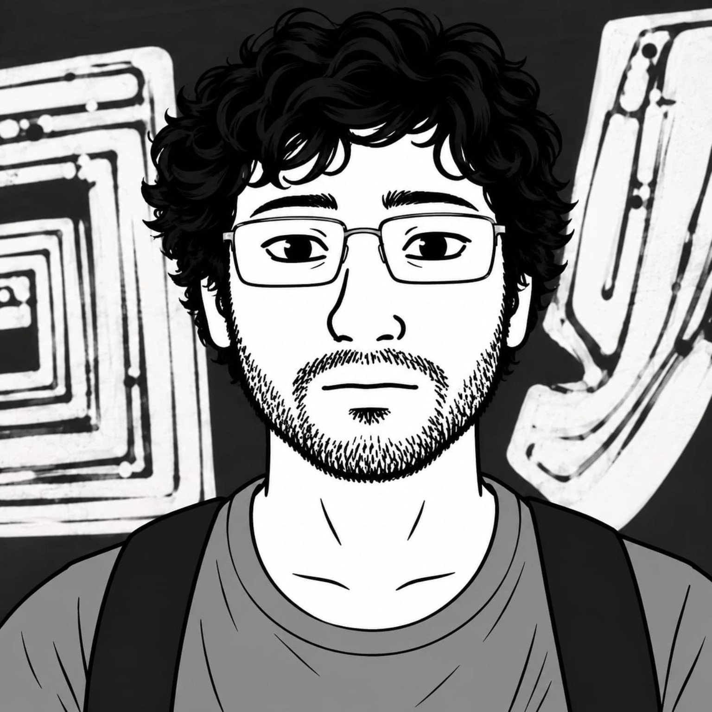
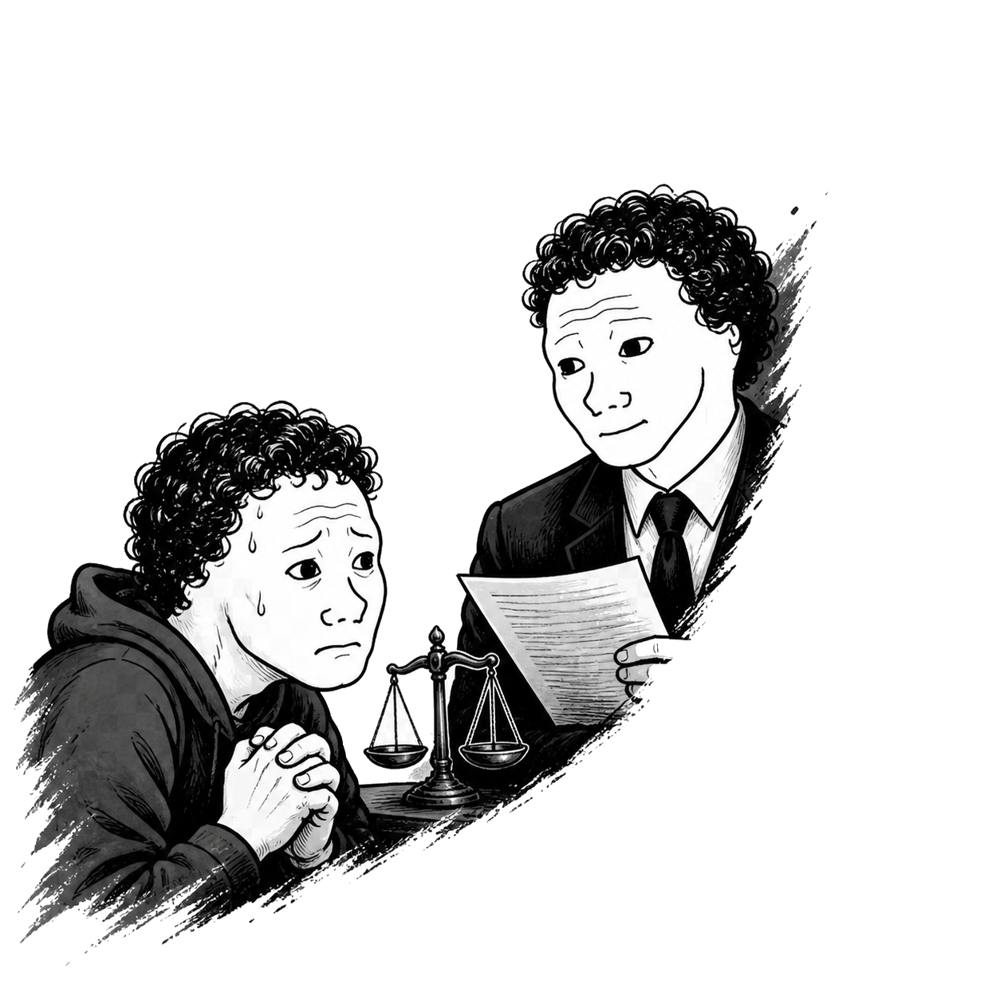
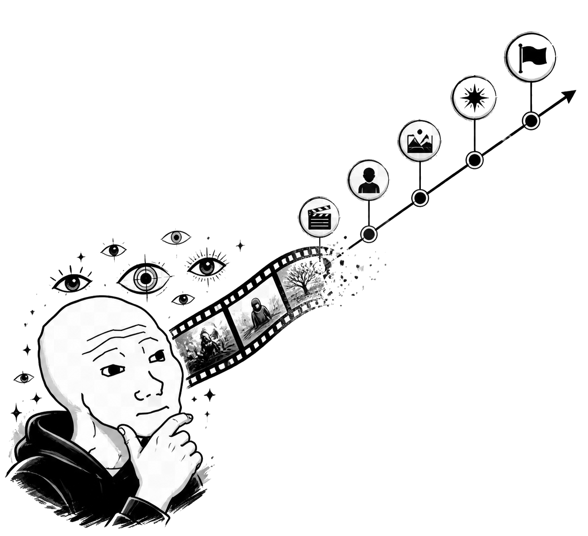
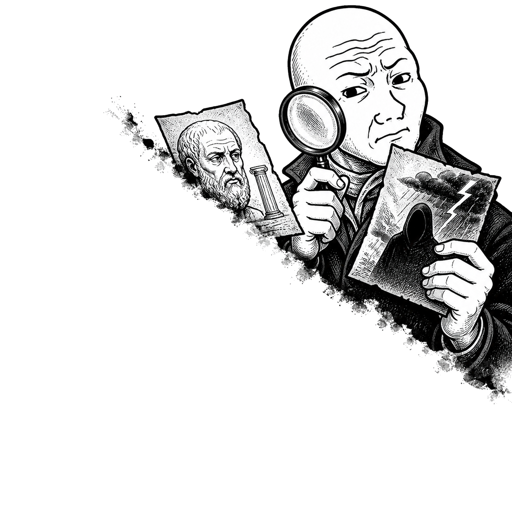
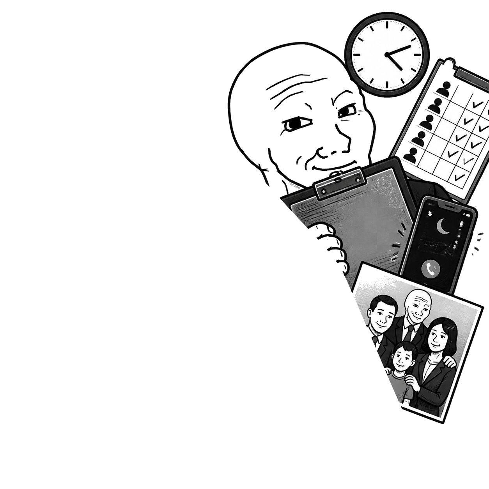
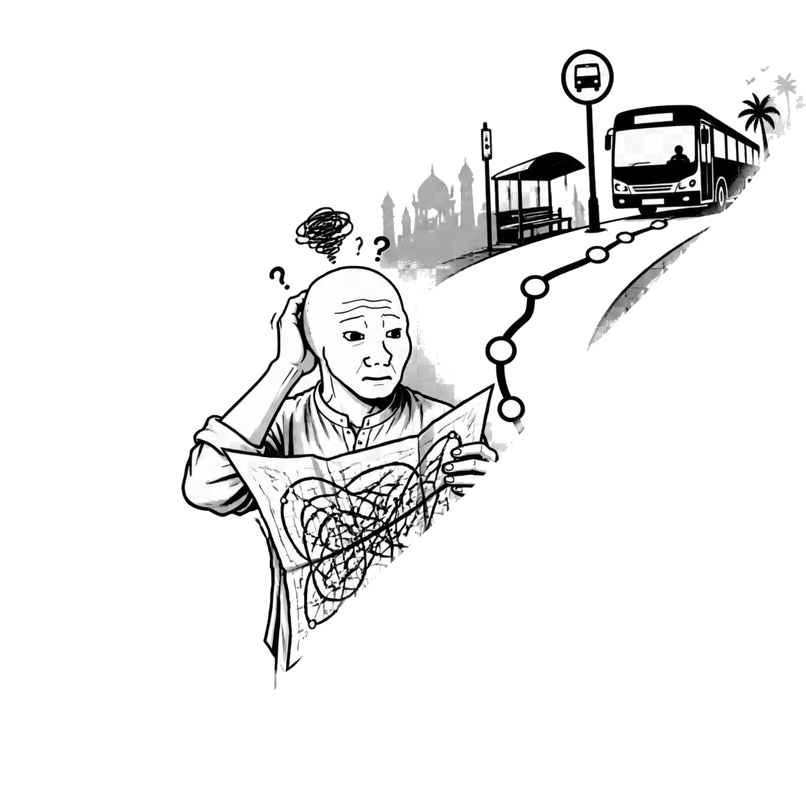
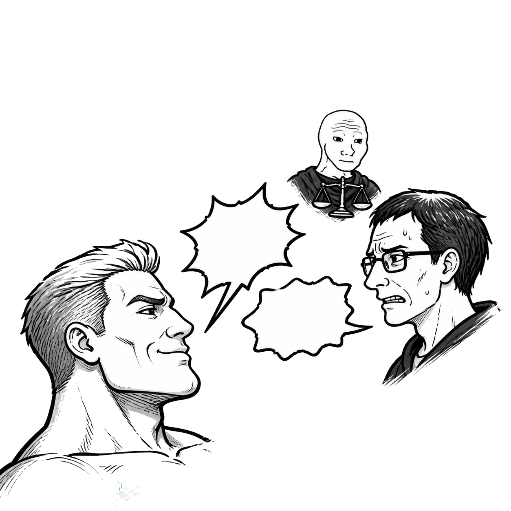
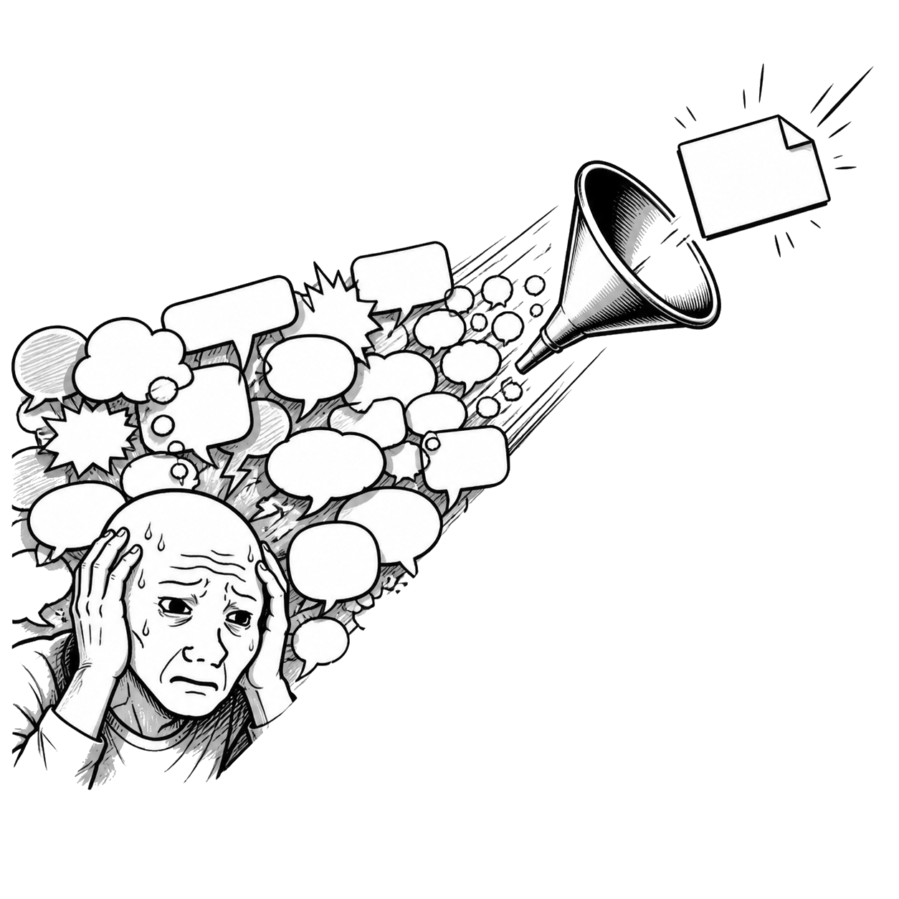

- Building and maintaining production software across backend and AI-heavy workflows.
- Turning shifting product requirements into systems that remain legible after launch.
Karachi, Pakistan · currently shipping
Builds smart stuff.
Software engineer specializing in AI/ML, backend systems, and making machines slightly less clueless than humans.
AI / Backend / Systems

Work
Production systems, measurable outcomes, fewer hand-wavy diagrams. The part where the code has consequences.
- Deployed an LLM-curated XGBoost decision-support model for false-positive detection: 94.6% accuracy and 0.989 ROC-AUC.
- Integrated Elasticsearch, Celery, Kafka, and multi-view anomaly detection for near-real-time offense scoring.
- Built REST APIs for offense closure, reopen workflows, and cross-platform correlation.
- Taught Java data structures and algorithms through tutorials and coding labs.
- Designed and graded work for 100+ students and provided 1:1 mentoring.
- Replaced manual collection with Python and Selenium, improving extraction speed by roughly 70%.
- Reduced manual effort by roughly 80% while improving targeting accuracy.
Projects
Selected proof that the tabs, models, queues, and questionable amounts of coffee eventually became products.
LegalEase
Legal information in Pakistan is fragmented, inaccessible, and expensive for non-lawyers. Manzar built an AI-first advisory platform grounded in Pakistani law that answers law-specific questions and escalates complex cases to real lawyers. It was developed with input from Kazi Associates, reached Stage 3 at FICS (NUST), and was presented at ICISCT '25.

Watch
Coding agents can reason over text and images but are effectively blind to screen recordings. Watch is an MCP server that turns local or hosted videos into compact, structured event timelines, with scene-aware sampling, on-demand frame inspection, caching, and per-call cost reporting.
View project ↗
Elenchus
Complex agent investigations often collapse framing, evidence gathering, and judgment into one confident pass. Elenchus separates those epistemic jobs: it challenges the initial framing, dispatches independent evidence lanes, and adjudicates what the findings establish, contradict, retract, or leave unresolved.
View project ↗
LalaScore
Workplace dysfunction is usually experienced privately and marketed away publicly. LalaScore investigates companies through public signals and anonymous community evidence, producing a sourced “corporate bullshit index” around micromanagement, unpaid overtime, attendance obsession, and related patterns while preserving due-process language.
View project ↗
TRNSIT Kolachi
Navigating Karachi’s public transport is opaque, fragmented, and difficult to use while moving. TRNSIT Kolachi reduces the trip to search, comparable route options, and a step-by-step journey timeline with large tap targets and service-specific visual cues.
View project ↗
AgentRed
Online discourse is polarized but difficult to analyze at scale. AgentRed retrieves opposing Reddit positions, extracts the debate axis and arguments, runs support and counter agents across multiple rounds, then uses a judge chain to crown the stronger “Chad” argument and weaker “Virgin” argument.
View project ↗
DialogSum
Dialogue summarization systems trade accuracy for efficiency without a single obvious tuning strategy. This project compares full FLAN-T5 fine-tuning, LoRA, and prompt tuning against ROUGE metrics and human baselines to make those trade-offs concrete.

About
Human-readable context before the inevitable list of frameworks.
I build AI-first products and the unglamorous backend machinery that makes them reliable.
My work lives between robust software engineering and intelligent behavior: LLMs, RAG pipelines, agents, APIs, distributed processing, and systems that must keep functioning after the demo ends.
I’m based in Karachi, collaborate globally, and care about precise implementation and useful outcomes.
Operating principles
Useful over impressive. Clear over clever. Shipped over hypothetical.
View the lore
Technical arsenal
Python, Java, JavaScript, SQL, PostgreSQL, MySQL, MongoDB, Django, DRF, FastAPI, Flask, Kafka, Celery, Docker, Elasticsearch, Selenium, Git.
AI / ML inventory
LangChain, LangGraph, Hugging Face, Ollama, RAG, vector DBs, SageMaker, PEFT, LoRA, RLHF, scikit-learn, pandas, NumPy.
Education + certs
- BS Software Engineering, Sir Syed University — 3.58/4.0
- Machine Learning in Production — DeepLearning.AI
- ML Specialization — Stanford / DeepLearning.AI
- Meta Back-End Developer Certificate
Education
The formal timeline, including the parts that never make it onto a transcript.
2021—2025 / 3.58 CGPA
BS Software Engineering
A structured experiment in learning under constraints: unclear requirements, tight deadlines, and teammates with different definitions of “done.” Outcomes included technical competence, social survival skills, and an unhealthy tolerance for last-minute submissions.
2019—2021
Pre-Engineering
Learned the fundamentals, made friends, and navigated a system most students actively avoid in Karachi. Built discipline through limited resources, solidified core science concepts, and then watched COVID turn college life into recorded lectures, WhatsApp PDFs, and self-directed survival learning.
2007—2019
Secondary School
School was a major character-development lab: entered as an extrovert, became a high achiever, got humbled, and exited as an introvert with no social skills. Graduated somewhere above average, having witnessed classmates take wildly different paths—a firsthand lesson in how much luck shapes your future.